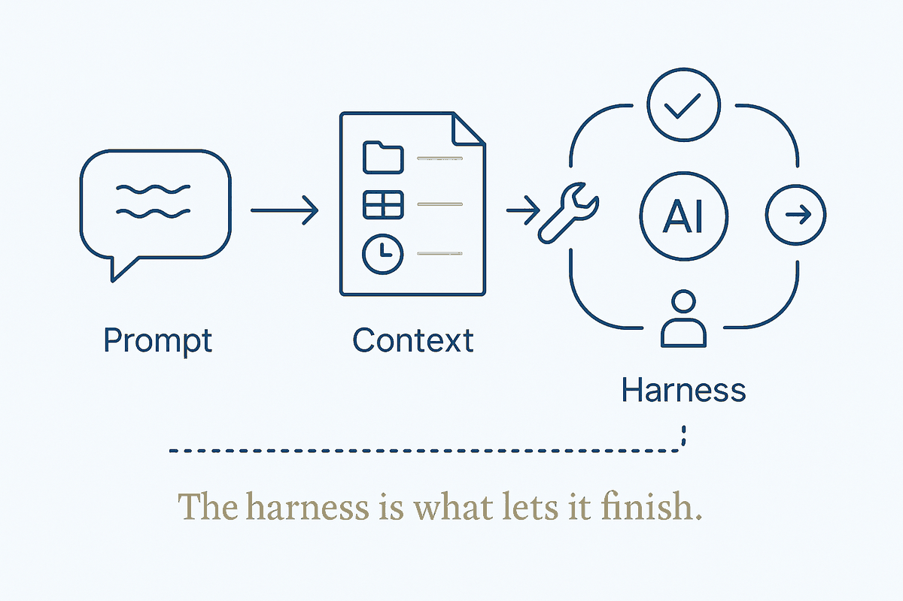

The third level of getting real work from AI — building the system around the model (tools, checks, memory, retries, escalation) so it can finish long tasks, not just answer.

⚠️ Attribution. "Harness engineering" is Clare Kitching's term (LinkedIn, 2026), as the third of three levels: prompt engineering → context engineering → harness engineering. The contribution here is not the term but the worked examples — what the harness looks like when you actually build one. Cite her when writing about it. (Consistent with the tool-extender-not-framework-owner positioning.)
| level | question it answers | |---|---| | Prompt engineering | What should the AI do? — the instruction | | Context engineering | What does it need to know? — the briefing pack | | Harness engineering | What does it need around it to finish the job? — the working environment |
The first two are covered in Stop Prompting, Start Directing and The Context Graph. Harness engineering is the layer those two stop short of.
Building the system that lets a model finish real work: tools, workflow, permissions, checks, memory, retries, and escalation around the AI. Not the words you send and not the documents you attach — the machinery that turns an answer into a completed task.
Without a harness, even frontier models fail long tasks: they do too much at once, or declare victory early. The harness is what catches the failure the model can't see itself — a check that flags a wrong result, a retry that survives a dropped connection, an escalation that sends the uncertain case to a human.
⭐ This is the same claim as "structure beats magic," one level up. The result comes from the structure around the model, not from the model.
A week of building a personal system produced five concrete harnesses, each now its own article:
⭐ Each is a small harness: the thing around the work that makes the work trustworthy.
Harness engineering for data is close to what model-driven data engineering already is — the harness around the modelling: generated transformations, validation, lineage, the checks that make a pipeline trustworthy rather than merely running. That connection is worth developing separately (candidate frame for the breakthrough-modeling article).